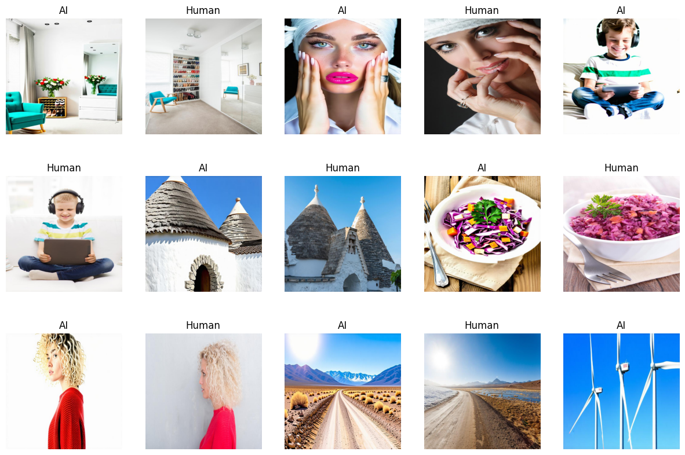

Dataset Overview

The dataset used in this project is the AI vs. Human-Generated Image Dataset, stored in CSV format. It consists of labeled images categorized as either AI-generated or human-created.
Dataset Structure:
- Training Data:
train.csv - Testing Data:
test.csv -
Main Dataset Directory:
/kaggle/input/ai-vs-human-generated-dataset
Key Features:
- Image Data: Contains images from AI and real sources.
- Labels: Each image is labeled as AI-generated or human-created.
- File Structure: CSV files reference images stored in directories.
Preprocessing Steps:
- Images are loaded using TensorFlow and OpenCV.
- Transformations like resizing and normalization are applied.
-
TensorFlow’s
tf.dataAPI is used for efficient processing.
Model Description
Base Model Selection
Several pre-trained CNN models were tested to distinguish AI vs. human-generated images:
- ResNet50
- ResNet50V2
- Xception
- InceptionV3
- ResNet152
- ResNet152V2
- EfficientNetB3
- EfficientNetB5
Training Process:
- Freezing base model weights to retain learned features.
-
Adding a classification head with:
-
GlobalAveragePooling2Dfor feature aggregation. Dropout (0.4)to prevent overfitting.-
Dense (32, relu)layer for feature transformation. -
Dense (1, sigmoid)for binary classification.
-
- Training for 10 epochs using Adam optimizer and binary cross-entropy loss.
Final Model Selection
The ResNet50V2 model was chosen for its superior accuracy and generalization.
Final Model Architecture:
- Base Model: ResNet50V2 (pre-trained on ImageNet)
-
Modifications:
- GlobalAveragePooling2D
- Dense(32, activation='relu')
- Dropout(0.4)
- Dense(1, activation='sigmoid')
Training Strategy:
- Loss Function: BinaryCrossentropy
- Optimizer: Adam
- Evaluation Metrics: Accuracy, Precision, Recall
-
Training Configuration:
- Epochs: 100
- Batch Size: Defined dynamically
- Early Stopping to prevent overfitting
- Model Checkpointing for best accuracy
- Training Logs stored via CSVLogger
Detailed Notebook
Access the full notebook for detailed insights into the training process and data exploration.